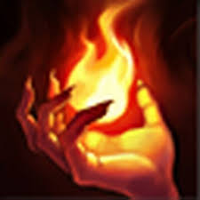
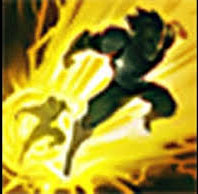

In the bot lane there are two roles, adc and support. The adc is usually a high damage champion that is relitively squishy, and the support will usually have a shield or heal to try and keep the adc alive. Some popular adcs right now are Jihn, Draven, Xayah, Miss Fortune, Lucian, and Vayne. Popular supports include Rakan, Soraka, Jana, Thresh, Blitzcrank, Sona, Lulu, and Bard. Usually the adc will take heal and flash as there summoner spells, but some of the higher level players will substitute cleanse for heal, because they know how to use it. The Support will most likely take exhaust and flash, but some people take ignite instead of exhaust.
 During the laning phase the adc will take all the cs, and the support will only take it if they have relic sheild, which is an item that you can buy in the shop. The support is supposed to help the adc kill the other laners, and can usually do so with a heal/shield, or a movment imparing ability Usually the support will also roam to mid lane a few times to try and help them get a kill, this will especially happen when bot lane is doing well. Once you have gotten there outer turret you can either continue pushing, if it is still early/mid game, or group up and try to win a team fight.
In team fights the adc will usually be a main source of damage for you team, which is why it is important for the support to always be prottecting them, and for there to be tanks soaking up damage so they don't have to. If the support is more tanky, they will probably take the front lines, because they can soak up damage.